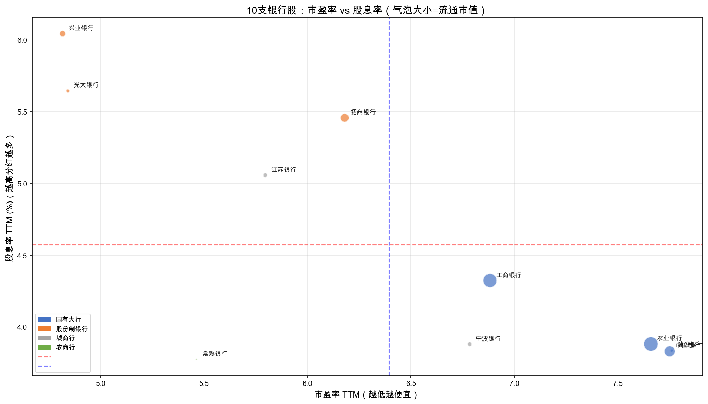
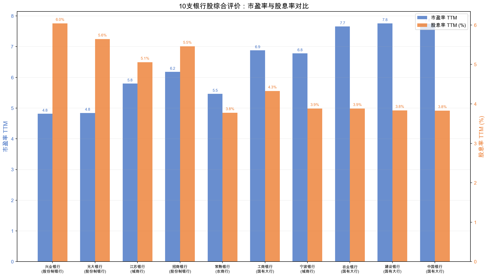
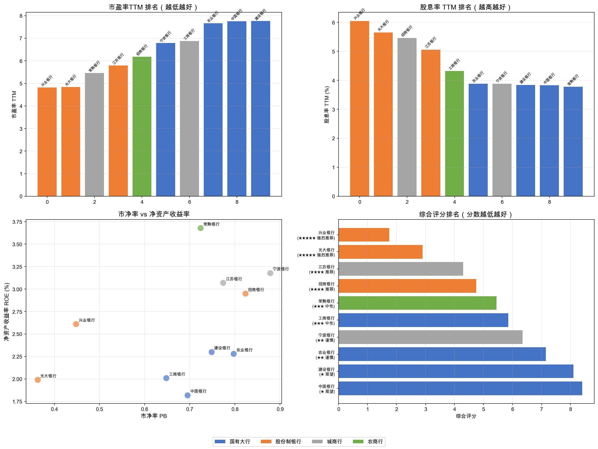
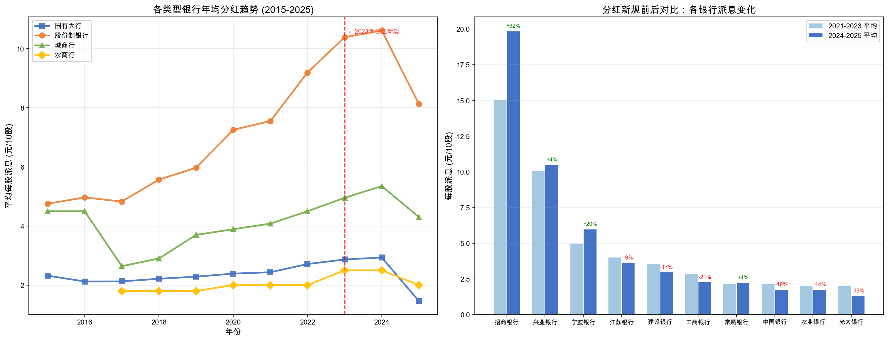

分析日期：2026-05-25
数据来源：AKShare（雪球/东方财富接口）
分析工具：Python (akshare, pandas, matplotlib)
主要读者：个人投资者（散户）
A 股有 38 家上市银行，总市值超过 12 万亿元。个人投资者在配置银行股时面临一个非常具体的决策困境：
| 决策场景 | 投资者面临的困惑 |
|---|---|
| 选股决策 | 国有大行、股份制银行、城商行、农商行——到底哪类银行的投资性价比最高？ |
| 估值判断 | 银行股 PE 普遍在 4-8 倍，是"便宜"还是"价值陷阱"？ |
| 回报预期 | 股息率 3%-7% 不等，哪些是"真金白银"的高分红，哪些只是股价跌出来的高股息率？ |
| 买卖时机 | 当前股价水平下，哪些银行股值得买入并长期持有？ |
《上市公司监管指引第 3 号——上市公司现金分红（2023 年修订）》
上市公司应当牢固树立回报股东的意识，严格依照《公司法》《证券法》和公司章程的规定，健全现金分红制度，保持现金分红政策的一致性、合理性和稳定性。
上市公司最近三个会计年度实现的年均可分配利润不低于人民币 1000 万元，且最近三个会计年度累计现金分红总额低于年均可分配利润的 30% 的，上市所在地中国证监会派出机构应当对公司进行约谈。
新规的分层政策逻辑：
银行股是 A 股分红的绝对主力，其分红行为直接影响全市场分红水平：
口径说明：本节全市场背景用于说明研究动机；后文排名、均值、图表和结论均来自本报告
data/bank_stocks_analysis.csv与data/bank_stocks_analysis_full.csv的样本数据。
银行业务模式高度同质化，盈利和分红相对稳定，使 PE 和股息率成为横向对比的有效工具：
| 指标 | 含义 | 在银行股分析中的价值 |
|---|---|---|
| 市盈率 (PE) | 股价 / 每股收益 | 银行盈利稳定，PE 越低通常意味着越"便宜" |
| 股息率 | 每股分红 / 股价 | 银行分红稳定，高股息率 = 更好的现金回报 |
| 市净率 (PB) | 股价 / 每股净资产 | 银行是资产驱动型，PB<1 意味着股价跌破净资产 |
| ROE | 净利润 / 净资产 | 衡量银行用股东的钱赚钱的效率 |
| 指标 | 含义 | 在银行股分析中的价值 |
|---|---|---|
| 市盈率 (PE) | 股价 / 每股收益，反映估值贵贱 | 银行盈利稳定，PE 越低通常意味着越"便宜" |
| 股息率 | 每股分红 / 股价，反映现金回报 | 银行分红稳定，高股息率意味着更好的现金回报 |
| 市净率 (PB) | 股价 / 每股净资产，反映资产折价 | 银行是资产驱动型，PB<1 意味着股价低于净资产 |
| ROE | 净利润 / 净资产，反映盈利能力 | 衡量银行用股东的钱赚钱的效率 |
从 A 股 38 家上市银行中，选取 10 支代表性银行，覆盖四大类型：
| 类型 | 选取股票 |
|---|---|
| 国有大行（4 家） | 工商银行、建设银行、农业银行、中国银行 |
| 股份制银行（3 家） | 招商银行、兴业银行、光大银行 |
| 城商行（2 家） | 宁波银行、江苏银行 |
| 农商行（1 家） | 常熟银行 |
使用 AKShare 开源金融数据库，通过以下接口获取数据：
| 数据类型 | AKShare 接口 | 说明 |
|---|---|---|
| 个股实时行情 | stock_individual_spot_xq() |
获取 PE、PB、股息率、股价等（雪球数据源） |
| 历史分红明细 | stock_history_dividend_detail() |
获取历年分红记录 |
| 财务指标 | stock_financial_analysis_indicator() |
获取 ROE、股息发放率等 |
| 排名 | 名称 | 类型 | 市盈率TTM | 市净率 | 股息率TTM | ROE(%) | 综合评分 |
|---|---|---|---|---|---|---|---|
| 1 | 兴业银行 | 股份制 | 4.82 | 0.45 | 6.04% | 2.61 | 1.75 |
| 2 | 光大银行 | 股份制 | 4.84 | 0.36 | 5.65% | 1.99 | 2.90 |
| 3 | 江苏银行 | 城商行 | 5.80 | 0.77 | 5.06% | 3.07 | 4.30 |
| 4 | 招商银行 | 股份制 | 6.18 | 0.82 | 5.46% | 2.95 | 4.75 |
| 5 | 常熟银行 | 农商行 | 5.46 | 0.72 | 3.78% | 3.68 | 5.45 |
| 6 | 工商银行 | 国有大行 | 6.88 | 0.65 | 4.32% | 2.01 | 5.85 |
| 7 | 宁波银行 | 城商行 | 6.78 | 0.88 | 3.88% | 3.18 | 6.35 |
| 8 | 农业银行 | 国有大行 | 7.66 | 0.80 | 3.88% | 2.28 | 7.15 |
| 9 | 建设银行 | 国有大行 | 7.76 | 0.75 | 3.84% | 2.30 | 8.10 |
| 10 | 中国银行 | 国有大行 | 7.75 | 0.70 | 3.83% | 1.82 | 8.40 |
关键发现：股份制银行在估值（PE）和分红回报（股息率）两个维度上全面领先。前 4 名中股份制银行占据 3 席。国有大行虽然规模最大、经营最稳健，但估值相对偏高、股息率偏低，投资性价比不如股份制银行。

解读： - 左下角区域是最优区间：低市盈率 + 高股息率。兴业银行和光大银行明显处于最优位置 - 红色虚线为平均股息率（4.55%），蓝色虚线为平均市盈率（6.49） - 气泡大小代表流通市值——国有大行（工商银行、农业银行）市值最大但处于图表右下方（估值偏贵、股息偏低） - 招行和江苏银行的股息率处于中上水平，估值适中

解读： - 蓝色柱（市盈率）：兴业银行（4.82）和光大银行（4.84）最低，意味着每赚 1 元钱，投资者只需支付不到 5 元 - 橙色柱（股息率）：兴业银行（6.04%）和光大银行（5.65%）最高，意味着每投入 100 元，每年可拿回超过 5.6 元现金分红 - 国有大行的股息率集中在 3.8%-4.3%，显著低于股份制银行

解读： - 市净率 vs ROE（左下子图）：理想位置是低 PB + 高 ROE。常熟银行 ROE 最高（3.68%），但股息率偏低；招商银行在 PB 和 ROE 之间取得较好平衡 - 综合评分排名（右下子图）：排名越靠前，综合投资价值越高
| 类型 | 平均市盈率 | 平均股息率 | 平均市净率 | 平均ROE |
|---|---|---|---|---|
| 股份制银行 | 5.15 | 5.72% | 0.54 | 2.52% |
| 城商行 | 6.29 | 4.47% | 0.83 | 3.13% |
| 农商行 | 5.46 | 3.78% | 0.72 | 3.68% |
| 国有大行 | 7.52 | 3.97% | 0.70 | 2.10% |
核心发现： - 股份制银行是"性价比之王"：最低的市盈率（5.15）+ 最高的股息率（5.72%）+ 最低的市净率（0.54） - 国有大行"稳健但贵"：市盈率最高（7.52）、股息率偏低（3.97%），反映市场对其资产质量和系统重要性的溢价 - 城商行/农商行"高成长低分红"：ROE 较高（3%+），但分红力度不如股份制银行
| 名称 | 近5年分红次数 | 近5年累计派息(元/10股) | 最近一次分红(元/10股) | 股息发放率(%) |
|---|---|---|---|---|
| 招商银行 | 5 | 84.85 | 10.13 | ~30% |
| 兴业银行 | 5 | 51.25 | 5.65 | ~25% |
| 宁波银行 | 6 | 33.00 | 3.00 | ~18% |
| 江苏银行 | 6 | 21.97 | 3.31 | ~28% |
| 建设银行 | 7 | 20.68 | 1.86 | ~30% |
| 工商银行 | 7 | 16.19 | 1.69 | ~30% |
| 常熟银行 | 6 | 13.00 | 1.50 | ~25% |
| 中国银行 | 7 | 12.38 | 1.09 | ~30% |
| 农业银行 | 7 | 12.06 | 1.30 | ~30% |
| 光大银行 | 6 | 9.63 | 1.05 | ~25% |
关键发现： - 招商银行分红金额遥遥领先，近 5 年累计每 10 股派息 84.85 元，是第二名兴业银行（51.25）的 1.66 倍 - 国有大行分红频次最高（7 次/5 年，含中期分红），但单次金额较低 - 光大银行虽然股息率很高，但累计派息绝对金额最低，说明其高股息率主要来自极低股价（3.10 元），而非高额分红

解读：
左图（各类型银行年均分红趋势）：2015-2025 年间，股份制银行的每股分红持续领先且增长最为显著，国有大行的分红在 2023 年后出现分化——部分大行因利润增速放缓而削减分红。红色虚线标注的 2023 年分红新规出台后，股份制银行的分红曲线斜率明显变陡，显示政策对优质银行分红的正面激励。
右图（新规前后各银行派息对比）：2023 年分红新规出台后，银行分红行为出现了明显的"分化"——招商银行（+32%）、宁波银行（+20%）大幅提高分红，显著超越政策要求；而部分国有大行（工商银行 -20.7%、建设银行 -17.1%）分红不升反降。这说明新规对不同类型银行的影响截然不同：盈利能力强的银行主动"抢跑合规"，而利润承压的银行即使面对监管压力也难以提高分红。
核心发现：新规并非一刀切地"逼所有公司多分红"，而是加速了银行间的分化——好银行更愿意分红，差银行即使想分也没钱分。这对投资者的启示是：高股息率如果来自高分红意愿 + 高盈利能力，是真正的投资价值；如果只是股价跌出来的统计幻觉，则是价值陷阱。
| 评级 | 股票 | 核心理由 |
|---|---|---|
| ★★★★★ | 兴业银行 | PE 最低（4.82）、股息率最高（6.04%）、PB 极低（0.45），性价比突出 |
| ★★★★★ | 光大银行 | PE 极低（4.84）、股息率高（5.65%）、PB 最低（0.36），适合"捡烟蒂"策略 |
| ★★★★ | 江苏银行 | PE 合理（5.80）、股息率较高（5.06%）、ROE 在城商行中表现出色 |
| ★★★★ | 招商银行 | 零售之王，分红额最高、品牌溢价带来稳定性，但 PE（6.18）和 PB（0.82）在银行股中偏贵 |
| ★★★ | 常熟银行 | 农商行代表，ROE 最高（3.68%），但股息率偏低（3.78%） |
| ★★★ | 工商银行 | 宇宙行，绝对安全但估值偏贵（PE 6.88），股息率中等（4.32%） |
| ★★ | 宁波银行 | ROE 不错（3.18%）但 PB 最高（0.88），安全边际不足 |
| ★★ | 农业银行 | PE 偏高（7.66），股息率偏低（3.88%），投资性价比一般 |
| ★ | 建设银行 | PE 最高（7.76），股息率偏低（3.84%），短期内非最优选择 |
| ★ | 中国银行 | PE 偏高（7.75），ROE 最低（1.82%），盈利能力在 10 支中最弱 |
想买"便宜且分红多"的银行股 → 首选兴业银行和光大银行，两者 PE 不到 5 倍、股息率超过 5.6%，是 A 股银行板块的"价值洼地"
想买"品质好且愿意付溢价"的银行股 → 选招商银行，虽然 PE 和 PB 在银行股中偏贵，但其零售业务护城河深、分红金额行业第一
国有大行的尴尬：工商、建设、农业、中国四大行的 PE 反而高于股份制银行（7-8 倍 vs 4-5 倍），股息率反而更低（3.8%-4.3% vs 5.5%-6.0%）。这与直觉相反——"大而不倒"的安全性已被市场定价，反而拉低了性价比
| 投资风格 | 推荐股票 | 关注指标 | 理由 |
|---|---|---|---|
| 深度价值（格雷厄姆式） | 光大银行 | PB 0.36 | 股价仅为净资产的 36%，安全边际极大 |
| 红利再投资 | 兴业银行 | 股息率 6.04% | 分红高且稳定，适合复利积累 |
| 成长价值（GARP） | 江苏银行 | ROE 3.07% | 城商行中成长性与分红兼顾 |
| 稳健蓝筹 | 招商银行 | 品牌溢价 | 零售银行龙头，穿越周期的能力强 |
估值指标单一：仅使用市盈率和股息率判断，未纳入不良贷款率、拨备覆盖率、资本充足率等银行特有的风险指标
静态分析：使用的是 TTM（过去十二个月）数据，未包含对未来盈利增长或分红的预测
未考虑市场情绪：银行股估值长期偏低有结构性原因（市场对资产质量的担忧、利率下行周期等），低 PE 不必然意味着股价会回归
分红可持续性：历史分红不代表未来分红承诺，银行在盈利下滑时可能削减分红
数据时效：分析基于 2026 年 5 月 25 日收盘数据，股价和估值会随市场波动而变化
原始数据文件：
- bank_stocks_analysis.csv — 10 支银行股核心指标
- bank_stocks_analysis_full.csv — 含分析指标和排名的完整数据
数据获取代码：使用 AKShare Python 库，详见 stock_individual_spot_xq()、stock_history_dividend_detail()、stock_financial_analysis_indicator() 接口。
data/bank_stocks_analysis.csv、data/bank_stocks_analysis_full.csv。分析报告 · 基于 AKShare 数据 · 2026-05-25